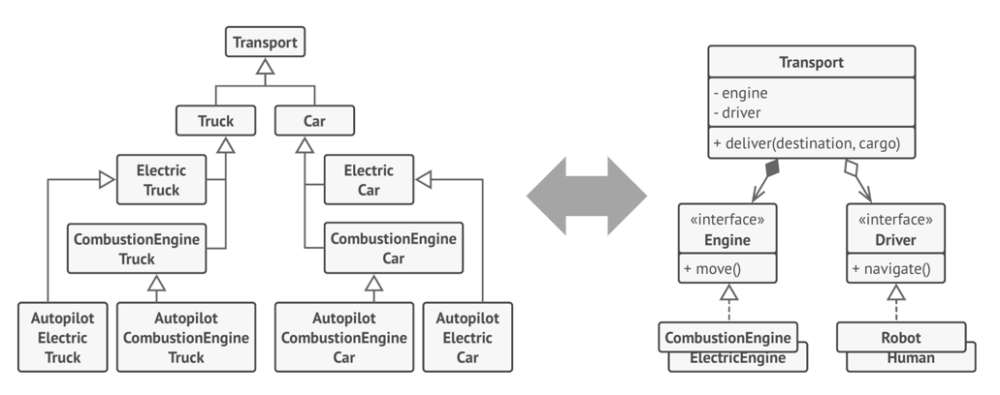

Шаблон (паттерн) проектирования – это наиболее часто встречаемое решение какой либо проблемы при проектировании архитектуры программного обеспечения
Особенности паттернов:
- описан в абстрактном виде
- реализация может отличаться для разных языков программирования
Паттерн проектирования состоит из:
- проблемы, решаемой паттерном;
- структуры классов для реализации решения;
- примера на каком то конкретном ЯП;
- описания реализации в различных ситуациях;
- связи с другими паттернами
Классификация паттернов
- Порождающие - описывают создание объектов без внесения в ПО лишних зависимостей
- Структурные - определяют различные способы построения связей между объектами ПО
- Поведенческие - определяют эффективные способы коммуникации между объектами
Положительные стороны применения паттернов:
- Проверенные решения
- Стандартизация кода
- Общий словарь программистов
Основные принципы проектирования
1 Инкапсуляция частей кода, которая подвержена изменениям
Определите аспекты программы, класса или метода, которые меняются чаще всего и отделите их того, что остаётся постоянным.
2 Программирование на уровне интерфейса
Программируйте на уровне интерфейса, а не на уровне реализации. Код должен зависеть от абстракций, а не конкретных классов.
3 Композиция предпочтительней наследования
Проблемы наследования:
- невозможность класса потомка отказаться от интерфейсов или реализации родителя
- дополнительный контроль при переопределении
- наследование нарушает инкапсуляцию класса родителя
- подклассы тесно связаны с родителем
- быстро разрастается иерархия классов
Пример предпочтительности композиции и агрегации наследованию

Предположим, вам нужно смоделировать модельный ряд автопроизводителя. У вас есть легковые автомобили и грузовики. Причём, они бывают с электрическим двигателем, и с двигателем на бензине. К тому же, они отличаются режимами навигации — есть модели с ручным управлением и автопилотом.
Как видите, каждый такой параметр приводит к умножению количества классов. Кроме того, возникает проблема дублирования кода, так как подклассы не могут наследовать нескольких родителей одновременно.
Решить проблему можно с помощью композиции. Вместо того, чтобы объекты сами реализовывали то или иное поведение, они могут делегировать его другим объектам.
Композиция даёт вам и другое преимущество. К примеру, теперь вы можете заменить тип двигатель автомобиля прямо во время выполнения программы, подставив в объект транспорта другой объект двигателя
Такая структура свойственна паттерну Стратегия